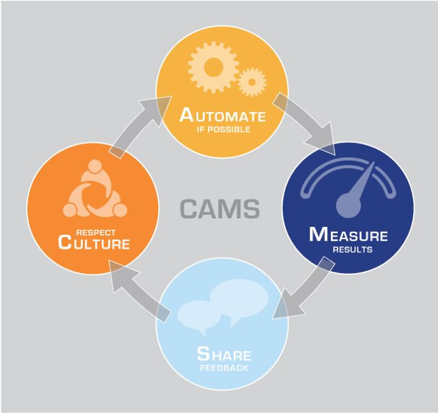
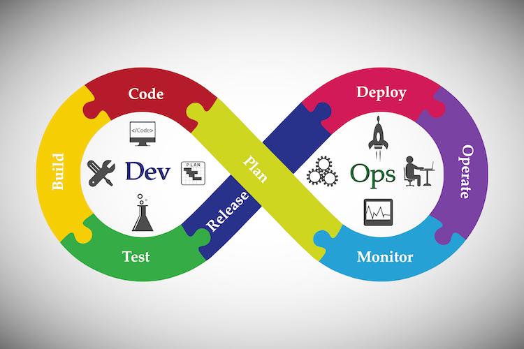

DevOps
DevOps
Patrick DeBois is a consultant, speaker, and conference organizer, he is considered the "founder" of the modern day DevOps movement. The movement had been in place as early as 2006, he spent 2007-2009 exploring as many aspects of accelerating delivery and integrating development and operations. Around the time of the 10 Deploys in a Day talk, he formed an impromptu conference named DevOps Days, in Ghent, Belgium 2009; the name eventually was adopted to the entire movement.
DevOps
We think that DevOps can be defined by two related ideas.
First: DevOps is the practice of operations and development engineers participating together through the entire service lifecycle, from the design.
Second: DevOps is also characterized by operations staff making use of many of the same techniques as developers for their systems work.
DevOps
Then what it is? DevOps is a software engineering culture and practice that aims at unifying software development Dev and software operation Ops. The main characteristic of the DevOps movement, is to strongly advocate automation and monitoring at all steps of software construction, from integration, testing, releasing to deployment and infrastructure management.
DevOps
DevOps culture allows deploying code to production faster and in an automated way. It helps to increases an organization's speed to deliver application and services. It can be defined as an alignment of development and IT operation.
DevOps
DevOps Skills
| Developers | Operations | Soft Skills |
|---|---|---|
| Teamwork | Networking | Creativity |
| Problem solving | Security | Empathy |
| Creativity | Cloud services | Strong drive to learn |
| Communication | Scripting/automation | Strong analytical skills |
| Patience | Project management | Humility |
| Open-mindedness | Visio/Diagrams | Mentorship |
DevOps
The CAMS model was created by John Willis and Damon Edwards

DevOps
Ok so DEVOPS, Culture, Development, Operations and now what should I do
Which is the key on this?

DevOps
Is very common to see that teams that are using DevOps practices deployed changes 30 times more frequently, and 200 times shorter, also with 60 times fewer failures, also they can recover from issues 168 times faster than other organizations.
DevOps
How is that possible, well let see it from Software Development side
We have combination of Developers side and Operationss side

DevOps

DevOps
